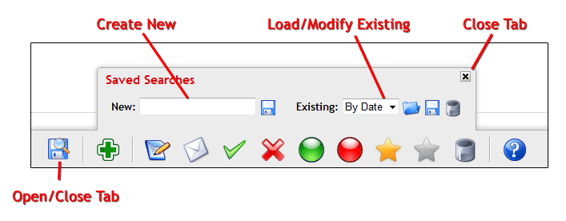

Saved Searches
Using Saved Searches
In all of the control panel search interfaces you will have the ability to create and use saved searches. A saved search allows you to store the exact
search settings you used for a search so it can be quickly restored in the future. This is handy if you do a lot of repeated searches and don't want to
enter all of the search information each time you do the search. The Saved Searches interface is accessed through the toolbar at the bottom of the page
and looks like this:

-
Create New - Use this section to create a new Saved Search.
 In the text input box, enter a short identifier that will help you to remember the search settings for this Saved Search. You can then click this icon
to save the search settings with that identifier.
In the text input box, enter a short identifier that will help you to remember the search settings for this Saved Search. You can then click this icon
to save the search settings with that identifier.
Each type of item has it's own set of Saved Searches, so you can use the same identifier for each item type!
Load/Modify Existing - Use this section to work with your existing Saved Searches.
 From the drop down selection list, choose the saved search that you would like to load, then click this icon to restore
the settings for that saved search. This will automatically trigger a new search based on the seach settings, and the matching
items will be displayed.
Use this icon to update an existing saved search. If you have made some changes to the search parameters but want to save
the search settings with the same identifier, you can use this icon. Select the saved search that you want to overwrite, then click
this icon to save the current search settings for the selected identifier.
From the drop down selection list, choose the saved search that you would like to load, then click this icon to restore
the settings for that saved search. This will automatically trigger a new search based on the seach settings, and the matching
items will be displayed.
Use this icon to update an existing saved search. If you have made some changes to the search parameters but want to save
the search settings with the same identifier, you can use this icon. Select the saved search that you want to overwrite, then click
this icon to save the current search settings for the selected identifier. From the drop down selection list, choose the saved search that you would like to delete, then click this icon to remove that
saved search. This will permanently delete the saved search.
From the drop down selection list, choose the saved search that you would like to delete, then click this icon to remove that
saved search. This will permanently delete the saved search.
Close Tab - Click this to close the Saved Searches tab
Open/Close Tab - You can click this toolbar item at any time to display the Saved Searches tab if it is currently hidden, or hide the Saved Searches tab if it is currently visible.